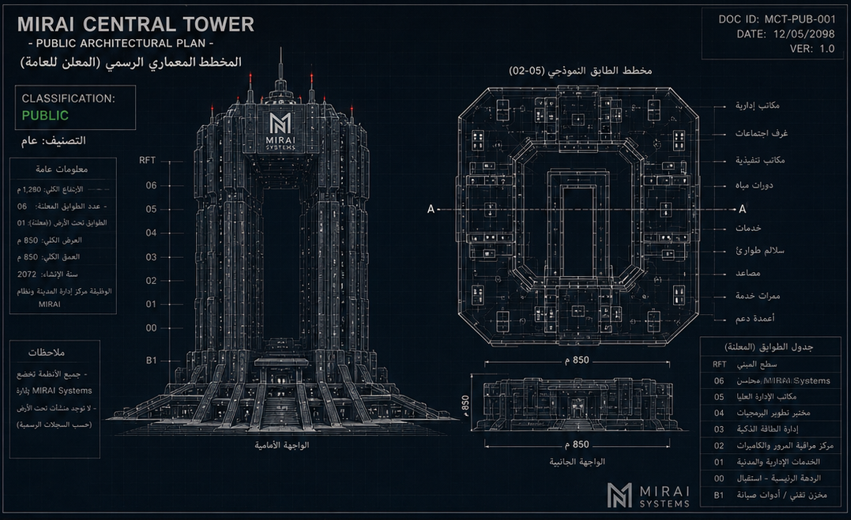
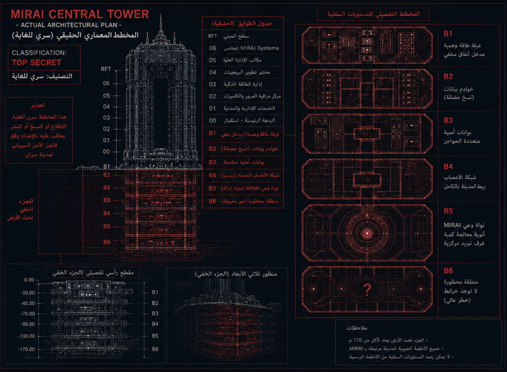

📡 تم خرق النظام مركزي - مستخرج المخططات الهندسية


[نظام]: تم الاتصال بنجاح بـ MIRAI_CORE_BACKUP...
[تنبيه]: جاري استعراض المخطط العام الافتراضي المصرح به...
[تنبيه]: جاري استعراض المخطط العام الافتراضي المصرح به...